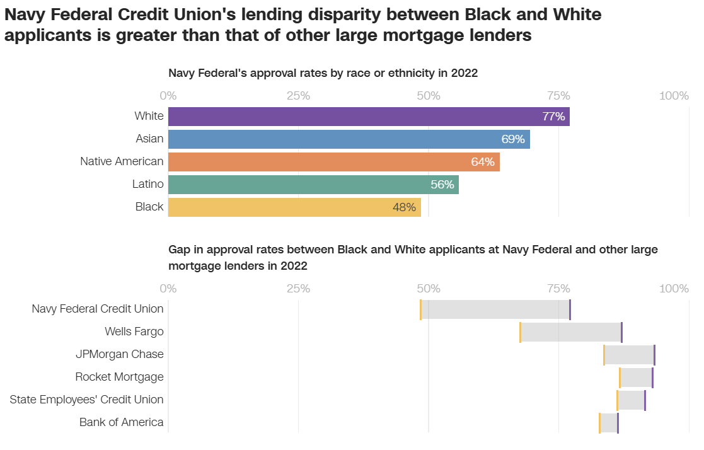

Exploring Predictive Power of Protected Classes in Mortgage Approvals
1 Introduction

How strong is the connection between your age, gender, or race and ability to attain a mortgage?
In early 2024, US Senator Sherrod Brown, along with colleagues, called for a review of lending practices by Navy Federal Credit Union (NFCU) as a result of a late 2023 CNN report that oulined disparate impact to persons of color seeking to acquire conventional loans for home purchases. The disparity in results between groups appears damning to the organization’s reputation. CNN’s analysis predominantly explored the mathematical differences between racial groups and various lenders, but did not necessarily outline a direct cause-and-effect relationship (e.g. being a person of color seeking a loan at NFCU is guaranteed to decrease your approval chances). Their analysis instead covered the rates of approval for the different groups, and compared those approval rates between groups and against other financial organizations’ approval rates.

Each of the organizations in the above graphic (from CNN) appear to have some degree of disparity in holding higher approvals for White/Caucasian applicants than for Black/African American, at first glance. The graphic certainly highlights the highest difference in approval rates at NFCU vs that of other financial institutions. Being at the top of the list of disparity absolutely draws ire from onlookers, yet the other institutions on the list may also be worthy of similar scrutiny. Disparate outcomes are disparate outcomes, and any case in which there are significant differences in outcomes for individuals on a basis of age, gender, race, or ethnicity (also called protected classes) is of concern to everyone.
A follow-up article by CNN includes statements from NFCU and an external reviewer. Some of the statements claim that non-race factors such as income verification and incomplete credit applications weren’t included in CNN’s study, and that other proprietary and non-public information are included in the organization’s mortgage underwriting processes.
Also of interest is an August 2024 story from Lehigh University on Artificial Intelligence, in particular Large Language Models, exhibiting bias in mortgage underwriting decisions. The article covers a study done using ChatGPT 3.5 and 4.0, Llama3-8B and 3-70, and Claude3 Sonnet and Opus, in which the LLMs were prompted to decide whether or not to approve a loan application based on provided data. The study found that the LLMs had similar biases for recommending interest rates, and great variation in bias as to whether or not loans would be approved. When the LLMs were directly instructed to use no bias and ignore race in making the decisions, the disparity in approval outcomes disappeared. This suggests that technology in decision-making processes is a double-edged sword, capable of doing both great harm and great good, depending on how it is weilded.
The Home Mortgage Disclosure Act (HMDA) is a federal law that establishes mandatory reporting for financial institutions that provide loans to borrowers. It mandates reporting of various values, metrics, and qualities of applicants and co-applicants, such as their debt-to-income ratio, loan amount requested vs. property value, age/gender/race of applicants, whether or not the loan was approved, along with many other datapoints. Part of the intent of this law is to enable the examination of lenders for potential discriminatory practices in lending, and enable accountability and oversight to combat such issues. HMDA data was leveraged for both the CNN’s report and for the study referenced in Lehigh University’s article.
In an ideal world, a potential borrower’s protected class features should have no impact on their ability to attain a loan, but instead be based solely on the borrower’s overall ability to repay the loan, given multiple financial factors. This research seeks to leverage HMDA data to explore CNN’s identified disparities, and explore other possible disparities within other lending organizations, through predictive modeling. Leveraging multiple techniques such as identifying common associations and trends within the data, performing statistical analyses, developing multiple model constructs, and via inclusion and exclusion of protected classes as part of model training and evaluation data, this study seeks to explore and answer some of the following questions (solely using publically available data):
Which factors within avaialble HMDA data are the greatest influencers in mortgage approvals?
Are protected classes of applicants and co-applicants strong predictors for determining loan approval?
If protected classes are strong predictors for loan approval, is the predictive strength greater for one institution over another?
If protected classes are strong predictors for loan approval, is the predictor’s strength higher within a particular geographic region?
How is predictive model performance impacted when including or excluding protected class data in training and testing data? e.g. Does performance increase when including? If so, by how much?
How well do predictive models perform when trained using protected class information that was collected by a lender observationally (e.g. via inspection of surname or visually seeing the applicant)?
How do loan-specific or home-specific qualities and features, absent borrower features, impact predictions of approval or denial?
Are borrower features aside from race as or more associated with a result of loan denial? e.g. is being female or being under or over a certain age as associated with loan denial as being a certain race?
Can available HMDA data be leveraged to effectively predict mortgage borrower interest rates?
If effective mortgage rate predictions are possible, how do they change when including or controlling for protected class data in the model?
Can selected / identified features and outcome (e.g. debt-to-income-ratio, loan-to-value ratio, and decision for approval or denial of the loan) be used to predict the borrower’s protected class features of race, gender, or age group?
As inferred by lenders, can various latent variables be identified as impactful within modeling, and can the degree or extent of their impact on the decision process be determined as it pertains to mortgage underwriting decisions?